💡 Ahorrar Energía
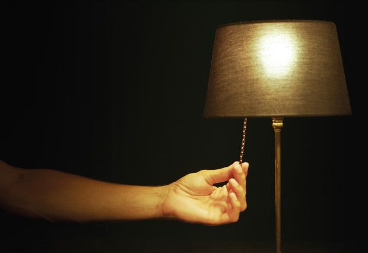
Paso 1: Apaga las luces y aparatos eléctricos cuando no los uses.
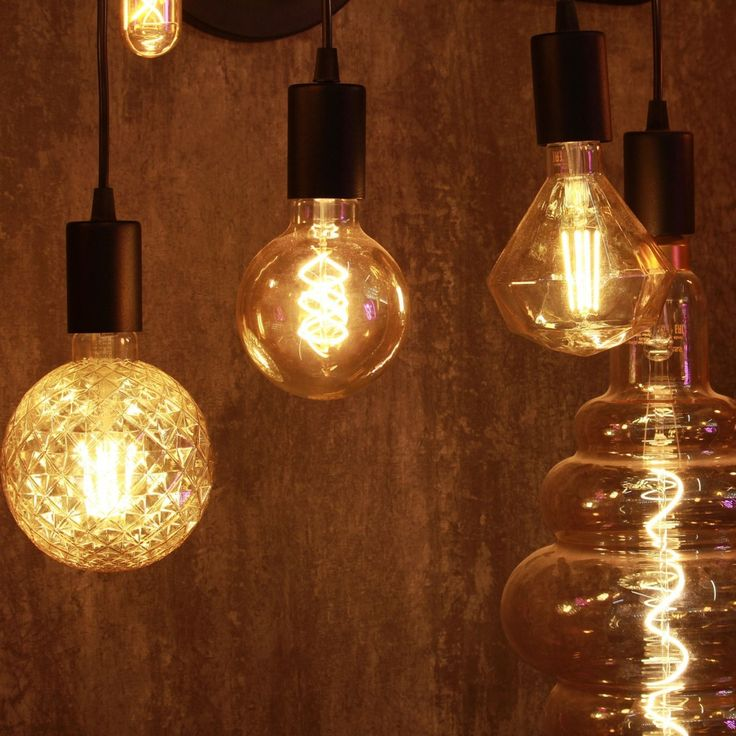
Paso 2: Usa bombillas LED.
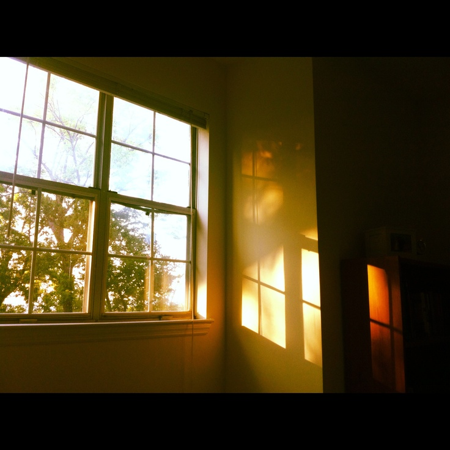
Paso 3: Aprovecha la luz natural.
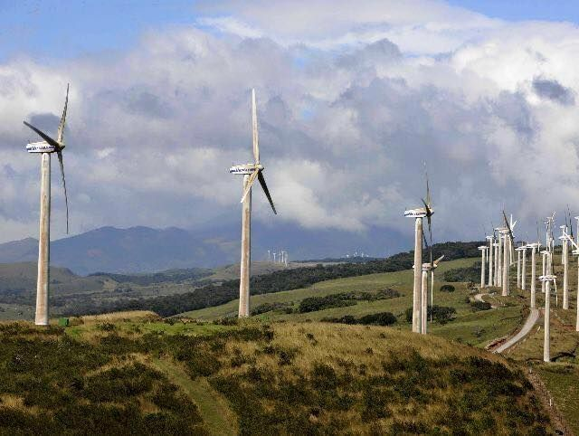
Paso 4: Usa ventilación natural.
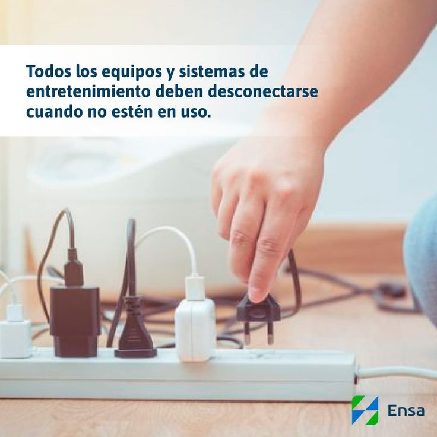
Paso 5: Apaga aparatos electrónicos.
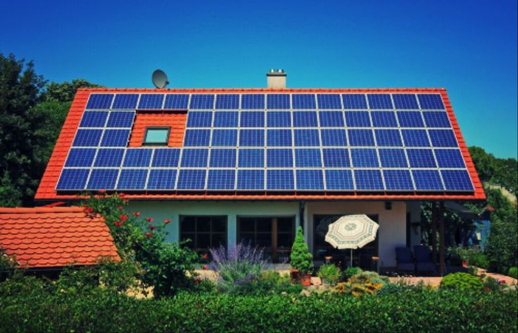
Paso 6: Usa energía solar.
Paso 7: Mejora el aislamiento térmico.
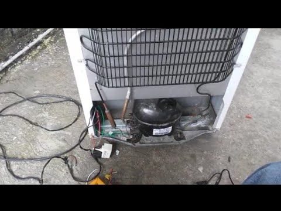
Paso 8: Optimiza el uso del refrigerador.
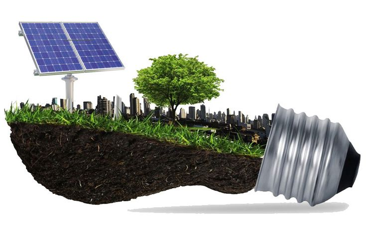
Paso 9: Usa energías alternativas.
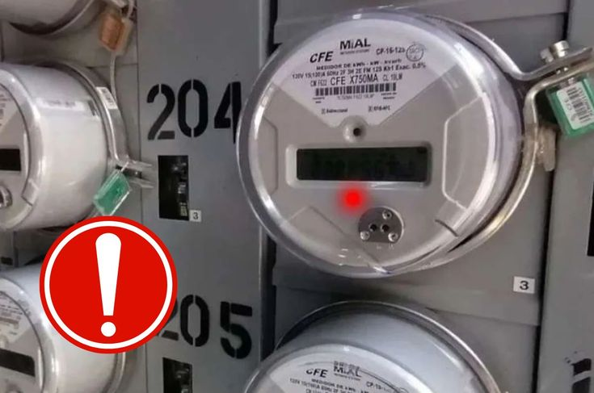
Paso 10: Usa temporizadores.
💧 Cuidado del Agua
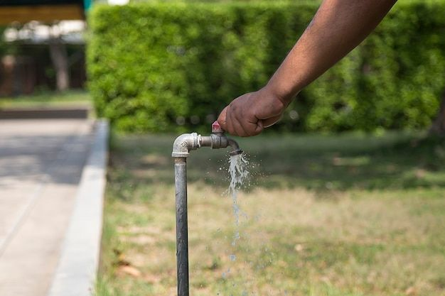
Paso 1: Cierra el grifo al lavar dientes.
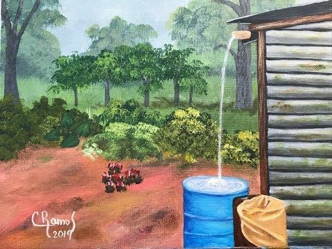
Paso 2: Recolecta agua de lluvia.
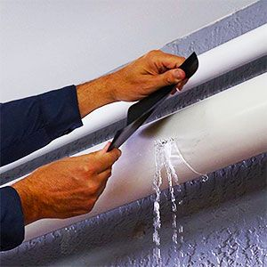
Paso 3: Repara fugas de agua.
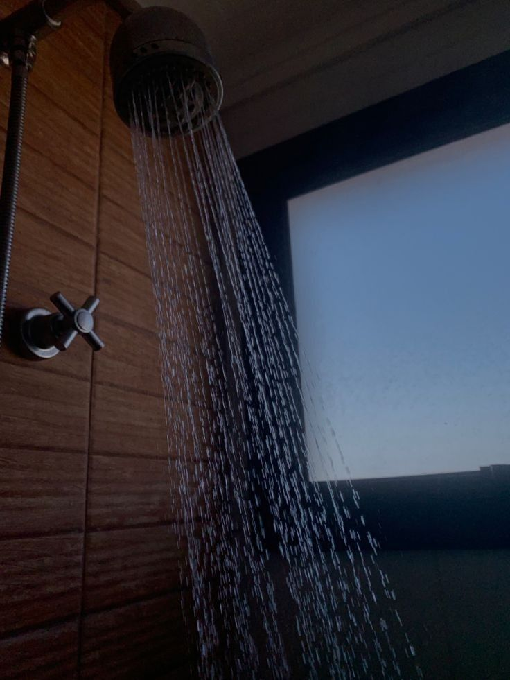
Paso 4: Dúchate rápido.
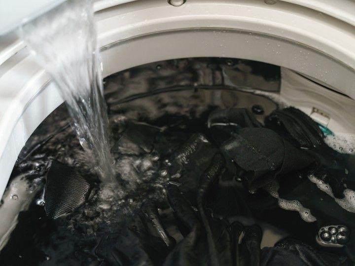
Paso 5: Lava ropa completa.
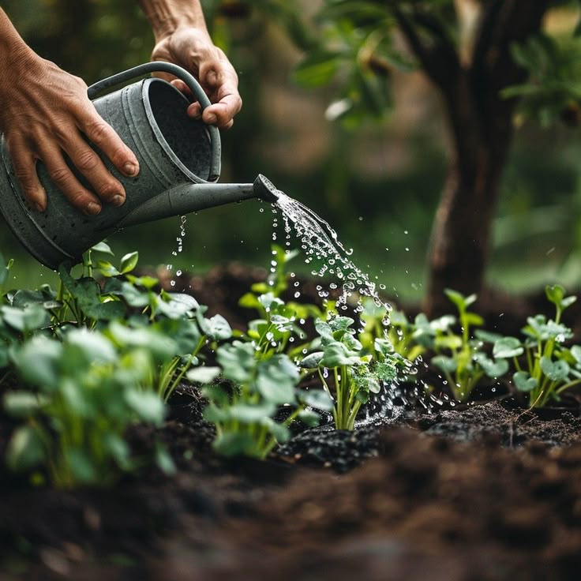
Paso 6: Riega plantas en horarios óptimos.
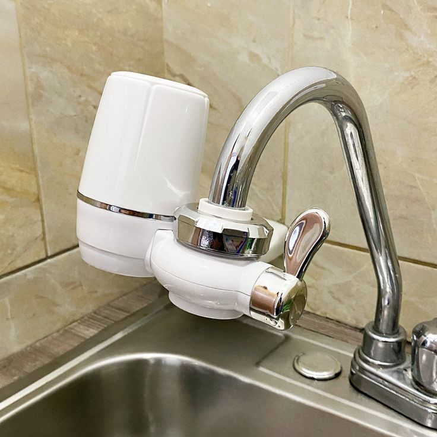
Paso 7: Usa filtros de agua.
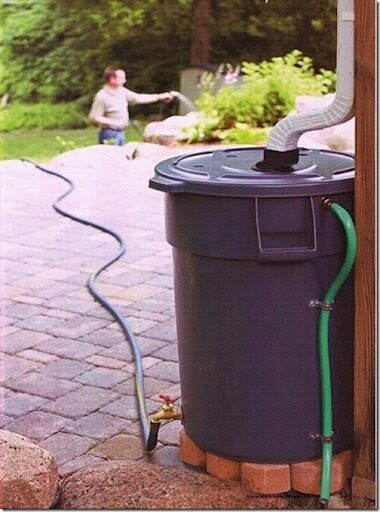
Paso 8: Reutiliza agua.

Paso 9: Monitorea consumo de agua.
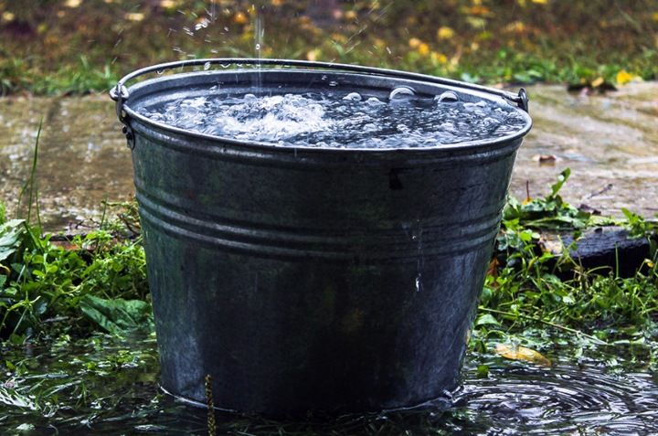
Paso 10: Usa cubetas en lugar de manguera.